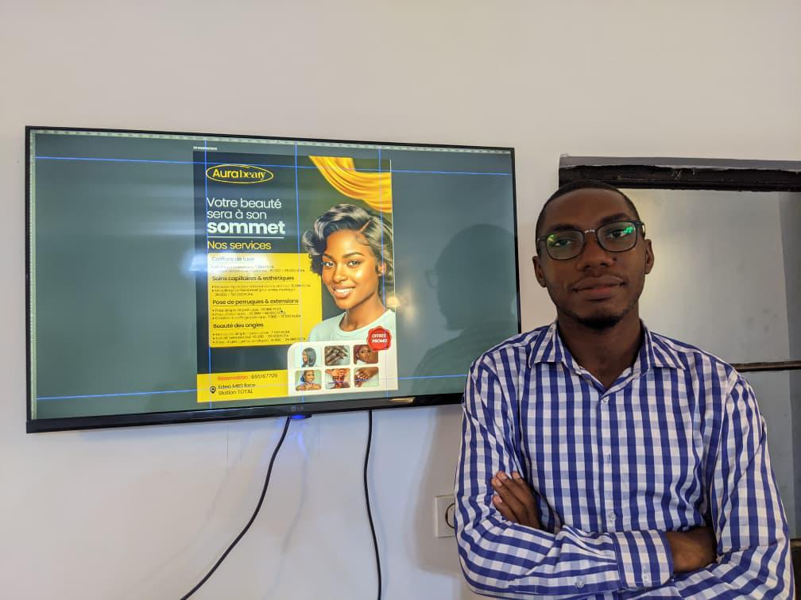

L'espace formation de DATAIKOS : des formations de haut niveau pour les ingénieurs et chercheurs qui construisent le futur technologique africain.
DATAIKOS est un collectif d'étudiants ingénieurs et chercheurs spécialisés dans l'IA distribuée, l'Edge Computing et l'IoT industriel. Fondé à Douala, opérant aux standards de la Silicon Valley.
Notre mission : résoudre les défis africains avec des solutions de classe mondiale. Nous ne suivons pas le futur — nous le construisons.
L'espace formation est le pilier académique de DATAIKOS, permettant à chaque membre et partenaire d'atteindre l'excellence technique requise par nos projets.
Cet espace centralise toutes les formations proposées par DATAIKOS et ses partenaires. Chaque formation est accompagnée de quizz progressifs pour valider vos compétences, du niveau néophyte à expert.

Photo du collectif DATAIKOS
Douala · Cameroun · World
Formations techniques de haut niveau dispensées par les membres experts de DATAIKOS.
Formation complète en gestion des stocks, prise de décision stratégique avec le diagramme de Pareto et initiation au prompt engineering, destinée aux membres et amis du collectif DATAIKOS.
De nouvelles formations seront bientôt ajoutées. Restez connectés aux annonces de DATAIKOS.
Gestion des stocks · Pareto · Prise de décision · Prompt engineering
Good Deal est l'une des premières formations de DATAIKOS, un programme concret de 10 jours pour maîtriser la gestion des stocks, la prise de décision avec Pareto et l'art d'interroger l'IA (prompt engineering).
Des cas pratiques de gestion des stocks, des simulations d'aide à la décision avec le diagramme de Pareto, et des analyses concrètes de requêtes en prompt engineering permettent aux participants de développer une expertise solide, progressive, du niveau néophyte jusqu'à Expert N1.
Testez vos connaissances avec nos quizz progressifs. Chaque quizz est lié à une formation spécifique.
Découvrez ceux qui font vivre l'espace formation DATAIKOS.